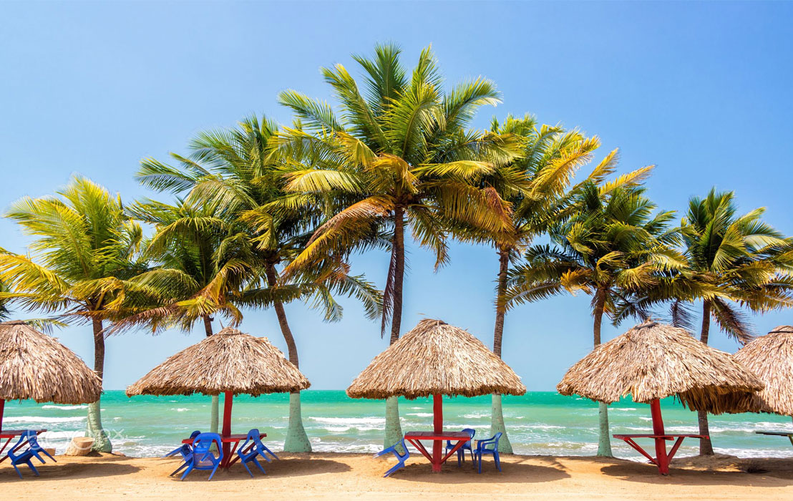
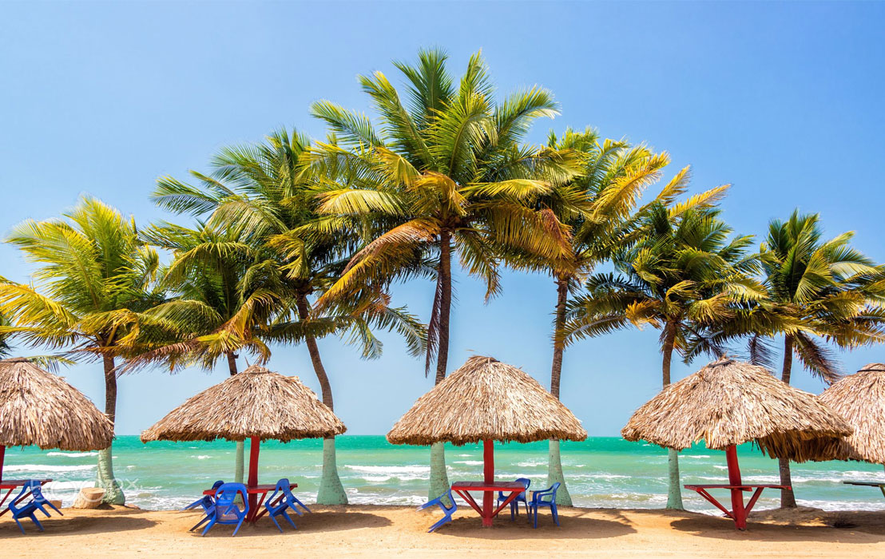

Historia de Barranquilla
La primera mención del territorio que ocupa Barranquilla data de 1533, y fue escrita por Gonzalo Fernández de Oviedo y Valdés. En ella describe el recorrido de Pedro de Heredia, fundador de Cartagena, justo semanas antes de fundar dicha ciudad, quien afirmaba que este punto era un atracadero de canoas de indios de la Gobernación de Santa Marta, que tenían dos canoas llenas de camarones secos que traían de mercadería, e iban al río Magdalena a comerciar con dicha mercancía, sal y otras cosas.